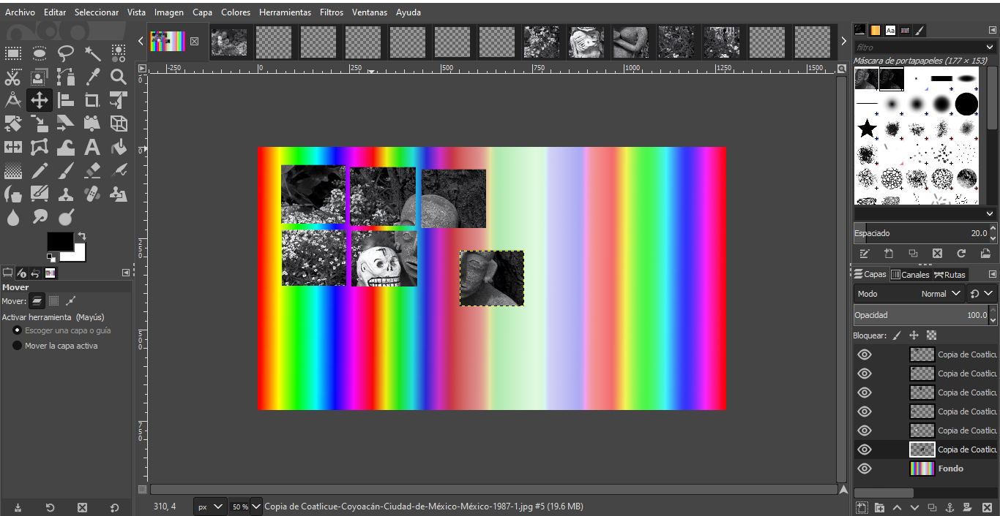
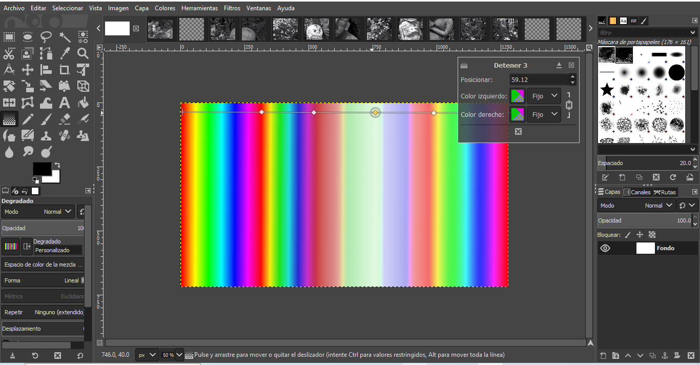
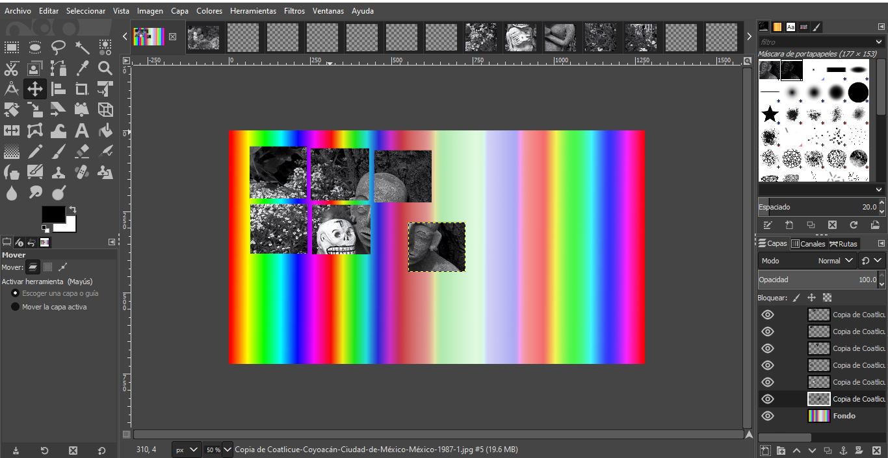
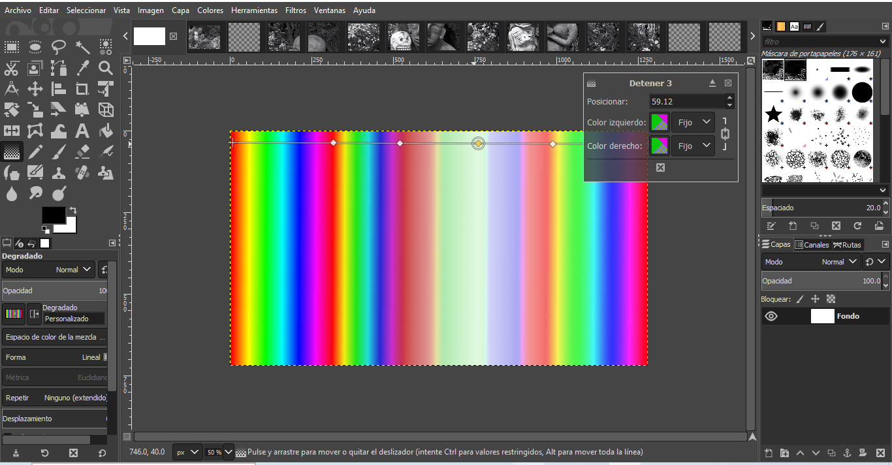
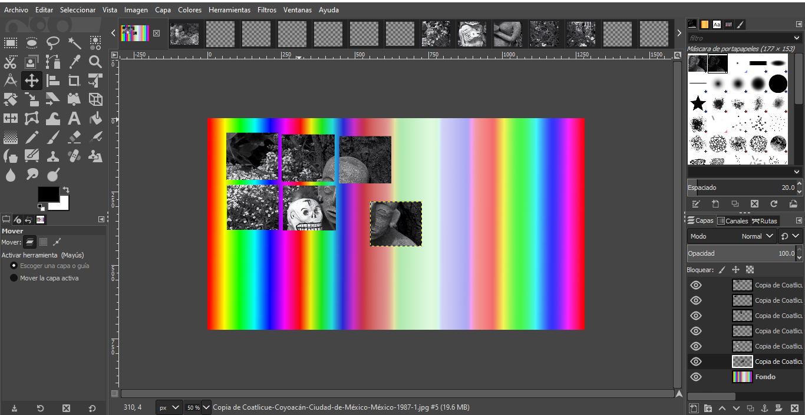
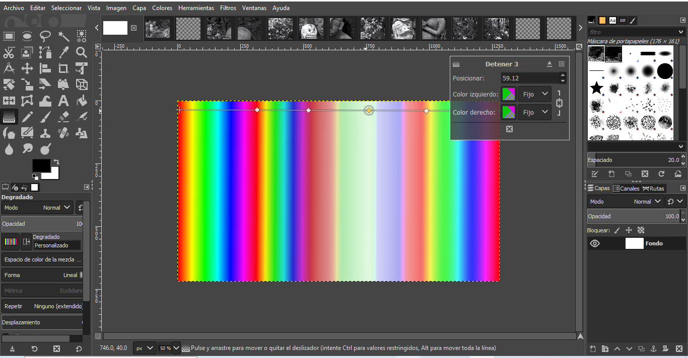

"Identidades Kitsch" es una exploración audaz y divertida del concepto de kitsch mexicano que desafía las normas establecidas por las prácticas eurocéntricas en el canon de la historia del arte. Inspirándose en las vanguardias que dejaron su huella en las prácticas artísticas mexicanas, el proyecto se embarca en la recreación de varias piezas emblemáticas mediante un collage digital animado con una estética urbana, buscando descentralizar la historia del arte de una manera lúdica y vibrante. En este contexto, el kitsch mexicano se convierte en una herramienta poderosa para cuestionar las jerarquías artísticas tradicionales y abrir un diálogo sobre la influencia de las corrientes internacionales en la evolución del arte en México y viceversa. A través de la yuxtaposición de elementos icónicos de las vanguardias europeas con la estética urbana contemporánea, el proyecto busca desafiar las percepciones preconcebidas y celebrar la riqueza e importancia del arte mexicano. "Identidades Kitsch" es un acto de reimaginación y resistencia, utilizando el collage digital como medio para fusionar diferentes períodos y estilos en un lienzo único. Al descentralizar la historia del arte, pretende destacar la vitalidad y la creatividad inherentes a la escena artística mexicana, reconociendo su lugar en la narrativa global del arte. La raíz misma de "Identidades Kitsch" se sumerge en la rica historia de la influencia europea en el arte mexicano durante el siglo XX, un diálogo artístico que trasciende fronteras y temporalidades. Desde la asimilación de elementos oníricos y fantásticos en el realismo mágico hasta la expresión de mensajes sociales y políticos a través del muralismo, las vanguardias europeas resonaron profundamente en la obra de artistas emblemáticos como Diego Rivera, Leonora Carrington y Rufino Tamayo. El proyecto se erige como un homenaje vibrante y kitsch a esta compleja danza de influencias, desafiando las nociones preconcebidas y celebrando la fusión de estilos que caracteriza la identidad artística mexicana. En este collage digitalizado, la historia del arte y la estética contemporánea convergen en un gesto divertido y provocador, destinado a descentralizar el relato tradicional del arte y destacar la vitalidad de la escena artística mexicana en el escenario global.
"Identidades Kitsch" invita a la audiencia a reflexionar sobre la construcción de la identidad artística, la influencia cultural y la interconexión de movimientos artísticos a lo largo del tiempo. A través de esta obra, se busca desencadenar una experiencia visual que, además de ser estéticamente impactante, provoque un cuestionamiento reflexivo sobre la relación dinámica entre las tradiciones artísticas y la contemporaneidad. La obra busca involucrar a los espectadores en un diálogo introspectivo, fomentando la exploración de conceptos relacionados con la identidad cultural y el entrelazamiento de influencias artísticas a lo largo de la historia.
Espacio para la descripción del proceso
Descripción
Descripción
Descripción


Diana Reyna, estudiante de Arte y Comunicación Digitales, se sumerge apasionadamente en la exploración y perfeccionamiento de sus habilidades artísticas. Con un enfoque especial en la fotografía, busca constantemente mejorar su destreza en este campo creativo. Su experiencia no se limita solo a la fotografía; ha incursionado en la edición de sonido, contribuyendo a la creación de paisajes sonoros cautivadores. Además, ha dejado su huella en pequeños documentales, desempeñando roles en la producción y edición de imágenes. Esta inmersión en proyectos audiovisuales le ha proporcionado una perspectiva multifacética y valiosas habilidades técnicas. Encuentra en la combinación de arte y tecnología un terreno fértil para expresar su creatividad. Su dedicación a perfeccionar sus habilidades en diversas áreas de Arte y Comunicación Digitales la posiciona como una estudiante comprometida y versátil en constante evolución.
Kenia Ivette Morales Morales es una artista con habilidades técnicas en animación digital. Certificada en Graphic Design & Illustration mediante el uso de Adobe Illustrator, su experiencia abarca no solo el diseño, sino también el manejo de otros programas de Adobe. Actualmente, se encuentra inmersa en sus estudios en la Universidad Autónoma en Lerma, donde está cursando Artes y Comunicaciones Digitales. Su participación en obras audiovisuales, como el cortometraje "Cubo de Experiencias" y "Decadencia Psicológica", destaca su interés y compromiso con diversas formas de expresión artística. Apasionada por el arte, el dibujo y la ilustración, Kenia Ivette canaliza su creatividad en proyectos como "Zonámbulo" para la UAM. Además, comparte generosamente gran parte de su trabajo en redes sociales, permitiendo que su arte alcance audiencias más amplias y demuestre su dedicación al campo de las artes digitales.
Omar es un estudiante de la UAM Lerma y un talentoso artista digital. Su participación en eventos locales, como la inauguración de una exposición en la Casa de Cultura de Lerma y el concierto "Deconstrucciones" en el Teatro Casa de la Paz, ha dejado una huella notable. Colaboró con visuales generados por Hydra, fusionando creatividad visual y musical como parte del colectivo de la UAM Lerma. Se inspira en la música experimental, el arte sonoro y los ambientes inmersivos para crear experiencias artísticas únicas. Su pasión por la inteligencia artificial, el arte generativo y la tecnología lo impulsa a explorar nuevas dimensiones creativas, fusionando lo digital con lo tradicional. Además de su enfoque en disciplinas digitales, también disfruta del dibujo y la pintura en diversos medios, mostrando una versatilidad artística en constante evolución.
Oscar Fernando Caballero Romero, un estudiante de arte digital, ha experimentado un fascinante recorrido artístico desde que fue incluido en una reconocida revista española para artistas emergentes a los 19 años. Ha exhibido su obra en galerías y casas culturales en Londres, Nueva York y California, consolidándose como un artista en ascenso. Su enfoque artístico se centra en la representación pictórica mediante programas de ilustración, modelado y animación, explorando las múltiples facetas de la existencia, especialmente el lado más oscuro y enigmático. Oscar se impulsa por el descubrimiento y la representación de las dualidades y dicotomías que definen su propia existencia y la de quienes lo rodean. A través de sus obras, busca desafiar las percepciones convencionales y revelar las sombras que a menudo se pasan por alto. Su objetivo es evidenciar que el mundo y las personas son mucho más complejos de lo que generalmente se reconoce, creyendo firmemente que reconocer estas sombras es esencial para comprender la verdadera naturaleza de la vida. En su expresión artística, Oscar desafía las nociones preconcebidas y ofrece una mirada provocativa a la complejidad de la experiencia humana. Su propósito es invitar a la reflexión, explorando los rincones más profundos de la existencia a través de un lente artístico digital. En su mundo, las sombras y las pesadillas se convierten en arte.
Ana Sofía es estudiante de arte y comunicación digitales en UAM Lerma. Su entusiasmo por la creatividad se refleja en su interés en aprender habilidades para la web, video, audio y visuales en plataformas en línea. Además de su dedicación a la moda, tiene una fascinación por la fotografía, capturando momentos. Fuera de su mundo creativo, disfruta de la libertad que le brindan las caminatas y los paseos en bicicleta, encontrando inspiración en la conexión con la naturaleza. Con un espíritu entusiasta y una mente abierta disfruta de nuevas experiencias, busca constantemente expandir sus habilidades y explorar la intersección entre el arte y la tecnología en el mundo digital.
¿Quieres saber más sobre el proyecto?
¡Ponte en contacto a través de nuestras redes sociales!